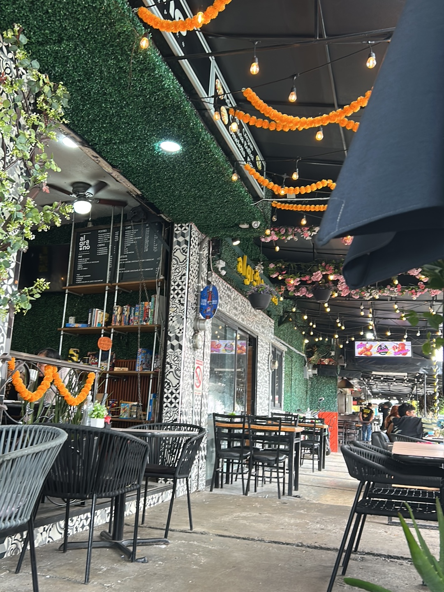

Muros de follaje, guías de cempasúchil y focos prendidos desde temprano. Café de la mañana, comida a media tarde y postres hasta el cierre.
La terraza está abierta todo el día: sombra de follaje, mesas de madera y sillas de alambre. Se puede venir a trabajar con la laptop, a platicar después de la comida o solo a pasar por un café.
Todo se prepara al momento, con café de tueste local. También tenemos todo para llevar.
Carta de ejemplo. Se arma con tu menú real y tus precios.
Pedidos para llevar y para oficina por WhatsApp.
Calz. Azcapotzalco - La Villa 1248
Lindavista, Gustavo A. Madero, 07300
Manda tu pedido por WhatsApp y pasa por él sin fila.
Escríbenos por WhatsApp para apartar mesa, pedir para llevar o preguntar qué hay hoy.